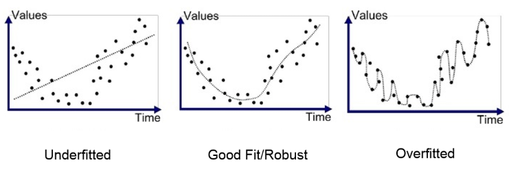

데이터 세트 분리란 데이터를 여러 하위 세트로 나누어 기계 학습 모델을 학습하고 평가하는 것을 의미합니다. 훈련에 사용된 것과 동일한 데이터에 대해 모델을 테스트하지 않는 것이 아이디어입니다. 이는 과적합으로 이어질 수 있기 때문입니다. 가장 일반적인 접근 방식은 데이터 세트를 훈련 세트와 테스트 세트로 나누는 것입니다.
필요성
과적합(Overfitting) 방지 : 동일한 데이터로 모델을 학습하고 테스트하는 경우 모델이 일반적인 패턴을 학습하기보다는 데이터를 기억할 수 있습니다. 이로 인해 모델이 훈련 데이터에서는 잘 작동하지만 새로운, 보이지 않는 데이터에서는 성능이 떨어지는 과적합이 발생합니다.
일반화(Generalization) 성능 : 기계 학습의 목표는 보이지 않는 데이터를 잘 일반화해서 설명할 수 있는 모델을 만드는 것입니다. 데이터를 분리함으로써 이전에 본 적이 없는 데이터에 대한 예측을 수행하는 모델의 능력을 테스트할 수 있으며, 이를 통해 실제 세계에서의 성능을 보다 현실적으로 추정할 수 있습니다.
학습을 많이 하게 되면(에포크(반복수)가 늘어날수록) 오히려 학습데이터와 테스트 데이터 사이의 차이만큼 일반화 성능이 낮아지게 됩니다.
공정한 평가 보장 : 별도의 테스트 세트를 사용하면 학습 데이터에 노이즈나 특정 사례를 맞추는 것이 아니라 유용한 패턴을 학습했기 때문에 모델이 잘 작동하는지 평가하는 데 도움이 됩니다. 테스트 세트가 없다면 내 모델이 잘 학습했는지 확인할 방법이 없습니다.
큰 수의 법칙에 따라 표본 집단의 크기가 커질 수록 모집단의 분포에 가까워지지만 우리가 학습에 사용하는 데이터는 그 양이 한정되어 있기 때문에 실제 데이터의 분포와 분명 차이가 있다. 이러한 차이를 고려하지 않고 학습시킨 모델은 우물 안 개구리가 된다. 가령 어떤 모의고사를 100회독하여 반복 숙달 한 학생에게 같은 모의고사 문제로 성적을 평가한다면 이는 적절한 평가 방식이 아닐 것이다. 따라서 모델의 올바른 평가를 위해서 평가에 사용할 Data Set과 학습에 사용할 Data Set을 분리할 필요가 있다.
과적합(Overfitting)이란?
위 모의고사의 예시처럼 모델이 이미 학습한 데이터에 대해서는 기가 막힌 적중 실력을 보이지만 실제 데이터에는 죽을 쑤는 상황을 모델이 Overfitting 되었다고 한다.
예측 오차의 변화에 따라 그림 3의 그래프는 아래와 같은 두 개의 구간으로 나눌 수 있다.
구간 A : 학습 오차와 테스트 오차가 같이 감소하는 구간 (과소적합, underfitting).
구간 B : 학습 오차는 감소하지만, 테스트 오차는 증가하는 구간 (과대적합, overfitting).
머신러닝에서는 구간 A에 있는 모델을 과소적합되었다고 하고, 구간 B에 있는 모델은 과대적합되었다고 한다. 우리의 목적은 학습을 통해 예측모델의 과소적합된 부분을 제거해나가면서 과대적합이 발생하기 직전에 학습을 멈추는 것이다. 머신러닝에서는 과대적합을 방지하기 위한 여러 방법이 연구되었으며, 일반적으로 validation set혹은 test set을 이용하여 과대적합이 일어났는지를 판별한다.
Train, Validation, Test set
" Train으로 학습하고 Validation으로 검증하고 Test로 최종 성능을 평가한다 "
Validation Set를 통해 모델이 Overfitting되지 않았는지 확인하고, 모델의 parameter를 조정한다.
ex) (사설)실전 모의고사
Test Set
모델의 '최종 성능'을 평가하기 위한 데이터셋
학습 과정에 관여를 하지 않음!!!
Test set는 모델 학습과 parameter tuning에 전혀 사용되지 않아야 한다
데이터의 일부분이라도, 어떤 방식으로든 Test set의 정보가 학습과 parameter tuning 과정에 활용되면 안됨. 이를 data leakage라고 함
ex) 실제 수능
일반적인 분할 비율
Train, Test로만 나눌 때
Train set : 80%
Test set : 20%
Train, Validation, Test로 나눌 때
Train set : 60~70%
Validation set : 15~20%
Test set : 15~20%
코드
Train, Test로만 나눌 때
from sklearn.model_selection
import train_test_split
import pandas as pd
# Example: Load a dataset
# Assuming you have a pandas DataFrame 'df' with features and a target column
# Replace with your dataset
data = {
'Feature1': [1, 2, 3, 4, 5, 6, 7, 8],
'Feature2': [10, 20, 30, 40, 50, 60, 70, 80],
'Target': [0, 1, 0, 1, 0, 1, 0, 1]
}
df = pd.DataFrame(data)
# Separate features and target
X = df.drop(columns='Target')
y = df['Target']
# Split the dataset into 80% training and 20% test sets
X_train, X_test, y_train, y_test = train_test_split(X, y, test_size=0.2, random_state=42)
# Display the shapes of the datasets
print("Training set size:", X_train.shape, y_train.shape)
print("Test set size:", X_test.shape, y_test.shape)
추가적으로 Validation set을 얻고 싶다면
# Split training set into training and validation sets
X_train, X_val, y_train, y_val = train_test_split(X_train, y_train, test_size=0.2, random_state=42)
print("Final training set size:", X_train.shape, y_train.shape)
print("Validation set size:", X_val.shape, y_val.shape)

{kind=link}
{kind=link}
{kind=link}